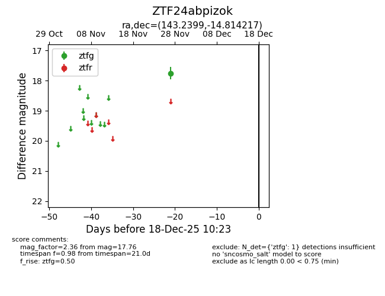
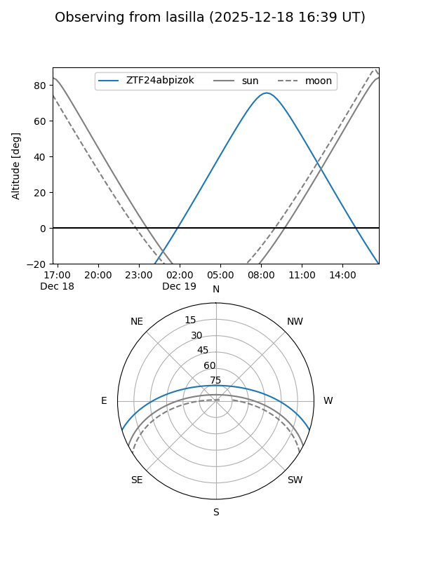
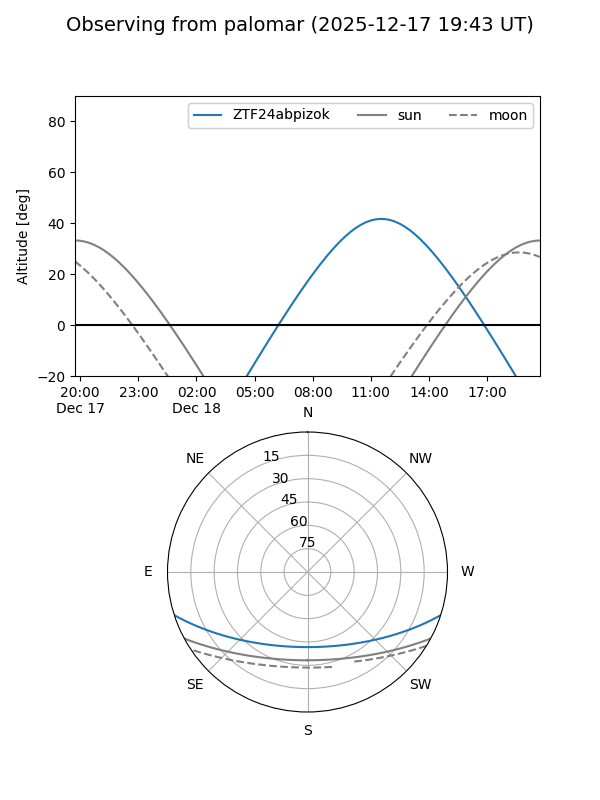

ZTF24abpizok
Target ZTF24abpizok at 2025-12-18 11:17
Aliases and brokers:
FINK: fink-portal.org/ZTF24abpizok
Lasair: lasair-ztf.lsst.ac.uk/objects/ZTF24abpizok
ALeRCE: alerce.online/object/ZTF24abpizok
alt names
ZTF24abpizok (ztf,fink_ztf)
Coordinates:
equatorial (ra, dec) = 143.2399,-14.81422
equatorial (HMS+DMS) = 09:32:57.58,-14:48:51.18
galactic (l, b) = (247.8008,+26.15706)
Photometry
last ztfg=17.76
1 ztfg detections
Lightcurve

Visibility


Additional plots